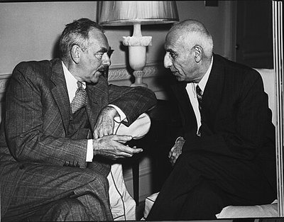
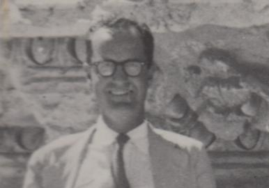
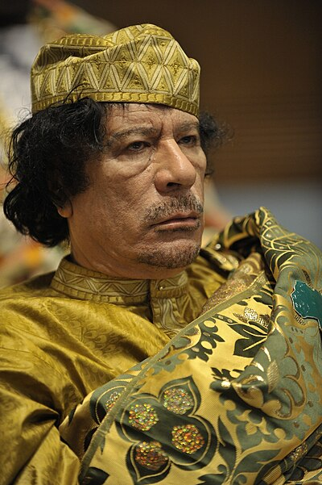
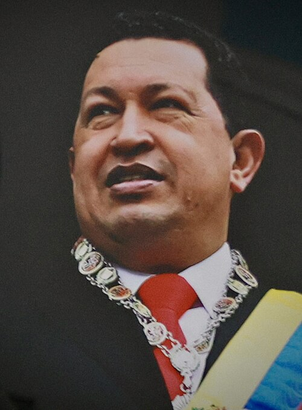

Act III
The Coups
The Pattern
The CIA’s very first major covert operation was about oil. Not communism. Not democracy. Oil. And the pattern never stopped.
Every country that nationalized its oil supply, switched its oil currency, or proposed an alternative to the petroleum-dollar system got the same answer: regime change.
CIA — PETROLEUM OPERATIONS
Documented
Operation Ajax (1953): The CIA’s first major covert operation overthrew Iran’s democratically elected Prime Minister Mohammad Mossadegh after he nationalized the Anglo-Iranian Oil Company (BP). The operation was planned by the CIA and MI6, led in the field by Kermit Roosevelt Jr. (grandson of Theodore Roosevelt). It restored Shah Mohammad Reza Pahlavi to power and returned BP’s access to Iranian oil. The CIA publicly acknowledged the coup in declassified records released in 2013.
CIA declassified records (2013). Malcolm Byrne, National Security Archive, George Washington University. Kermit Roosevelt, Countercoup (1979).

Mohammad Mossadegh
Iran PM — democratically elected, overthrown

Kermit Roosevelt Jr.
CIA — led Operation Ajax

Allen Dulles
CIA Director — authorized Ajax & MKULTRA
Documented
Saddam Hussein switched Iraq’s oil transactions from dollars to euros in November 2000 under the UN Oil-for-Food Programme. Iraq was invaded in March 2003. One of the first acts of the Coalition Provisional Authority was switching Iraqi oil sales back to US dollars.
UN Oil-for-Food Programme records. CNN (2000). Bloomberg. Federal Reserve data. CPA administrative orders.
Documented
Muammar Gaddafi proposed a gold-backed African currency (the gold dinar) to replace the dollar and euro in African oil transactions. Hillary Clinton’s emails (released via FOIA, Case F-2014-20439, Doc C05779612) show adviser Sidney Blumenthal explicitly identified the gold dinar as a threat to French financial interests in Africa. NATO airstrikes began in March 2011. Gaddafi was killed by rebels on October 20, 2011. Libya, once Africa’s wealthiest nation by HDI, collapsed into a failed state with open slave markets.
Clinton emails (State Dept FOIA). UN Security Council Resolution 1973. Scroll 002: Money Wars — Act II.

Muammar Gaddafi
Proposed gold dinar — killed 2011

Hugo Chávez
Venezuela — nationalized oil, sanctioned
Documented
Venezuela holds the world’s largest proven oil reserves (303.8 billion barrels per OPEC). Hugo Chávez nationalized oil production and redirected revenues to social programs. The US imposed escalating sanctions, recognized opposition leader Juan Guaidó as “legitimate president” in January 2019, and froze Venezuelan government assets. The country’s economy contracted by approximately 75% under sanctions pressure between 2014 and 2021.
OPEC Annual Statistical Bulletin. Congressional Research Service reports. US Treasury OFAC sanctions list. IMF World Economic Outlook data.
The Oil Pattern
Iran (1953)Nationalized oil → CIA coup, Shah installed
Iraq (2000)Switched to euros → Invaded 2003, switched back to dollars
Libya (2011)Proposed gold dinar → NATO airstrikes, leader killed
Venezuela (2017+)Nationalized oil → Sanctions, 75% GDP contraction
See also: Scroll 002: Money Wars — “The Holdouts”
Documented
John Perkins, former chief economist at consulting firm Chas. T. Main, described in published accounts how “economic hit men” create unpayable debts in resource-rich nations using World Bank and IMF loans as instruments. When leaders refuse, they are replaced by “jackals” (covert operatives). When jackals fail, the military goes in. Iran 1953. Iraq 2003. Libya 2011. The escalation sequence repeats.
John Perkins, Confessions of an Economic Hit Man (2004). Democracy Now interviews.
John Perkins
“Economic Hit Man” — exposed debt-trap playbook
Documented
The Safari Club (1976–1980s): After the Church Committee curtailed CIA covert operations, the agency outsourced to Saudi intelligence (GID), funded by Saudi oil money, banked through BCCI. CIA Director George H.W. Bush and Saudi GID chief Kamal Adham established the framework. Adham simultaneously served as BCCI’s secret front-man in the First American Bankshares takeover — putting a Saudi intelligence asset at the helm of Washington’s largest bank holding company.
Kerry/Brown BCCI Senate Report (1992). Joseph Trento, Prelude to Terror (2005). Steve Coll, Ghost Wars (2004).
The CIA’s first covert operation wasn’t about communism. It was about oil. The pattern never changed — only the justification.